Linux系统移植
Linux 系统移植
序言
Linux 学了有些时间了，手上的开发板很多功能都提前做好了，对初学者挺友好的，但是为了学到更到东西，就来试试移植下新的 Linux 系统到开发板上。
环境
硬件环境
- 开发板型号： 100ask_imx6ull_pro 开发板
- 处理器类型：NXP IMX6ULL
- **处理器架构：**恩单核 Cortex-A7
- **处理器主频：**800MHZ
- 内存容量：512 MB DDR3
- 存储介质：4GB eMMC
软件环境
- 宿主机
- 宿主机操作系统：Ubuntu 18.04
- 交叉编译器：100ask 提供的工具链 arm-buildroot-linux-gnueabihf- 支持的最低内核版本：4.9.0
- 开发板
- U-Boot：一开始用的 NXP 官方提供的版本但不能正常启动内核，后改为 100ask 提供的版本
- 内核版本： NXP 提供的 4.9.88 版本
- 根文件系统类型：BusyBox 1.29.0
Linux 系统移植过程概述
Linux 系统移植需要以下三个部分：
- bootloader：用于启动 Linux 内核。常用 bootloader：U-Boot
- Linux 内核：一般使用芯片原厂提供的源码
- 根文件系统：存放一些常用的命令和文件
U-Boot、Linux kernel 和 根文件系统三者一起构成了一个完整的 Linux 系统。
步骤
- 移植 U-Boot
- 移植 Linux 内核：编译内核可以选择是否生成设备树
- 根文件系统
移植 Linux 之前我们需要先移植一个 bootloader 代码，这个 bootloader 代码用于启动 Linux 内核，bootloader 有很多，常用的就是 U-Boot。移植好 U-Boot 以后再移植 Linux 内核，移植完 Linux 内核以后 Linux 还不能正常启动，还需要再移植一个根文件系统(rootfs)，根文件系统里面包含了一些最常用的命令和文件。所以 U-Boot、Linux kernel 和 rootfs 这三者一起构成了一个完整的 Linux 系统，一个可以正常使用、功能完善的 Linux 系统。在本篇我们就来讲解 U-Boot、Linux Kernel 和 rootfs 的移植，与其说是“移植”，倒不如说是“适配”，因为大部分的移植工作都由 NXP 完成了，我们这里所谓的“移植”主要是使其能够在I.MX6U-ALPHA 开发板上跑起来。
U-Boot
U-Boot 的全称是 Universal Boot Loader，U-Boot 是一个遵循 GPL 协议的开源软件，U-Boot 是一个裸机代码，可以看作是一个裸机综合例程
Linux 系统要启动就必须需要一个 bootloader 程序，也就说芯片上电以后先运行一段 bootloader 程序。这段bootloader 程序会先初始化 DDR 等外设，然后将 Linux 内核从 flash(NAND，NOR FLASH，SD，MMC 等)拷贝到 DDR 中，最后启动 Linux 内核。
U-Boot 我们一般不是使用 U-Boot 官方的源码，而是采用开发板对应芯片厂商的定制版本，一般分为三种：
| 厂商 | 描述 |
|---|---|
| U-Boot 官方的 U-Boot 代码 | 由 U-Boot 官方维护开发的 U-Boot 版本，版本更新快，基本包含所有常用的芯片。 |
| 半导体厂商的 U-Boot 代码 | 半导体厂商维护的一个 U-Boot，专门针对自家的芯片，在对自家芯片支持上要比 U-Boot 官方的好。 |
| 开发板厂商的 U-Boot 代码 | 开发板厂商在半导体厂商提供的 U-Boot 基础上加入了对自家开发板的支持。 |
U-boot 官方 U-Boot 源码下载页面：http://ftp.denx.de/pub/uboot/
NXP 官方 U-Boot 源码 Git 地址：https://source.codeaurora.org/external/imx/ubootimx
U-Boot 移植
uboot 移植的一般流程：
- 在 uboot 中找到参考的开发平台，一般是原厂的开发板。
- 参考原厂开发板移植 uboot 到我们所使用的开发板上。
一般 uboot 中需要解决串口、NAND、EMMC 或 SD 卡、网络和 LCD 驱动，因为 uboot 的主要目的就是启动 Linux 内核，所以不需要考虑太多的外设驱动。
PS：这里使用 NXP 官方提供的 uboot 按照正点原子教程移植到 100ask 开发板初步测试成功，但是后续启动 Linux 内核时会出现 data abort 的问题，目前暂未解决，换成 100ask 提供的 uboot 则能正常启动 Linux 内核，这里依旧是使用 NXP 官方提供的 uboot 源码进行修改测试。
编译 NXP 官方开发板的 U-Boot
找到 NXP 官方 I.MX6ULL EVK 开发板对应的默认配置文件以后就可以编译一下，这里我们选择 EMMC 版本的 mx6ull_14x14_evk_emmc_defconfig ，CROSS_COMPILE 选择自己的交叉编译器。
使用如下命令编译 uboot：
1 | make ARCH=arm CROSS_COMPILE=arm-buildroot-linux-gnueabihf- mx6ull_14x14_evk_emmc_defconfig |
编译成功结果如下：
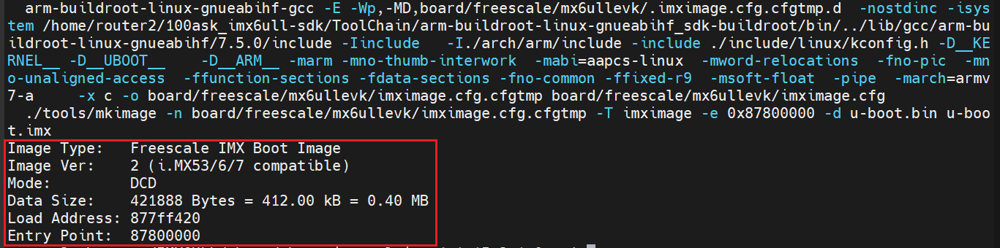
烧录到 SD 卡测试
将 SD 卡插入查看 /dev/ 目录下新增哪个目录，就是 SD 卡的目录。
**我们编译出来的 .bin 文件不能直接烧写到 SD 卡中，需要在 .bin 文件前面加上 IVT、Boot Data 和 DCD 这三个数据块。**这三个数据块是有指定格式的我们必须按照格式填写，然后将其放到 .bin 文件前面，最终合成的才是可以直接烧写到 SD 卡中的文件。
方法一：使用 imxdownload 程序
使用 imxdownload 程序将 .bin文件转换为 .imx 烧录进 SD 卡。
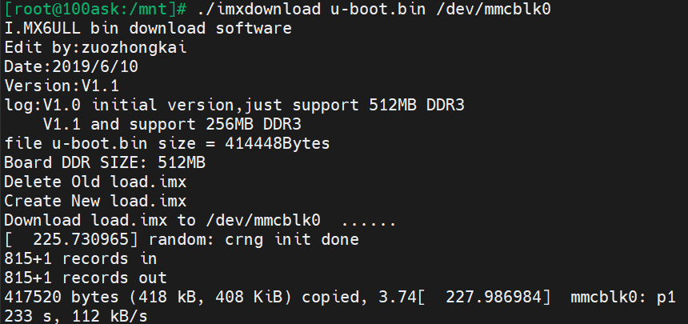
方法二：使用 dd 命令
1 | dd iflag=dsync oflag=dsync if=u-boot-dtb.imx of=/dev/mmcblk0 seek=2 |
烧录完成后，将开发板启动方式转换为 SD 卡启动，然后复位开发板，即可看见串口打印 uboot 信息如下：
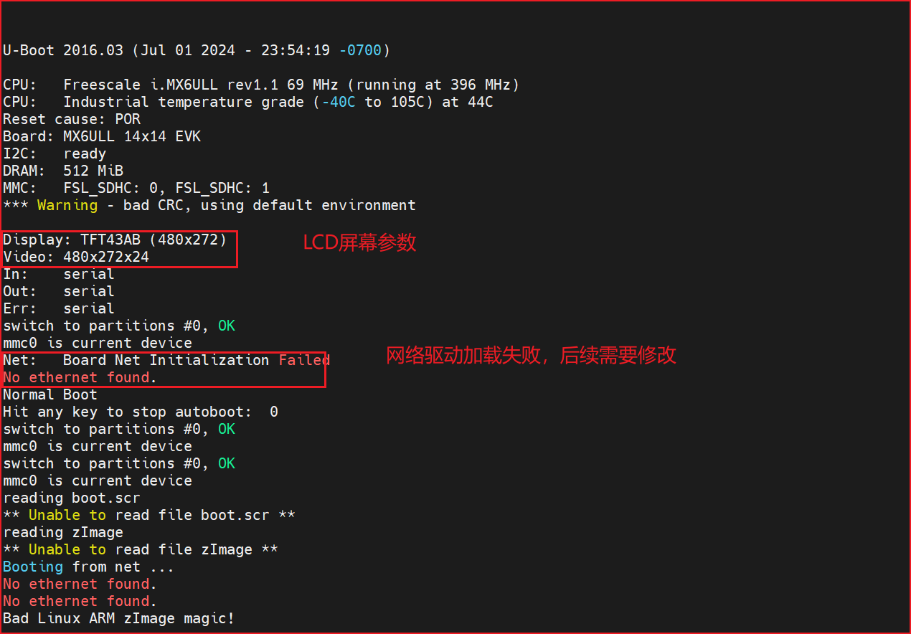
imxdownload 头文件和源文件如下：
1 |
|
1 |
|
检查驱动
检查 uboot 的驱动，一般是检查 SD 卡、EMMC、LCD、网络这几方面的驱动。根据下面检查后可知，NXP 官方I.MX6ULL EVK 开发板的 uboot 在 100ask 开发板的运行情况：
- uboot 启动正常，DRAM 识别正确，SD 卡和 EMMC 驱动正常。
- uboot 默认 LCD 驱动是 4.3 寸 480*272 分辨率的，若使用其他屏幕需要修改参数。
- 网络不能工作，需要修改驱动。
SD 卡和 EMMC 驱动检查
1 | mmc list // 列出当前的 MMC 设备 |

从打印信息看出，mmc 设备 0 是 SD 卡，容量为 942.5 MB，与我使用的 SD 卡相符，说明 SD 卡驱动正常。
检查 mmc 设备 1，输入
1 | mmc list // 列出当前的 MMC 设备 |
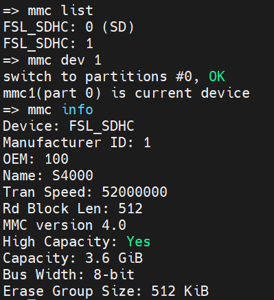
从打印信息看出，mmc 设备 1 是 EMMC 卡，容量为 3.6 GB，说明 EMMC 卡驱动正常。
LCD 驱动检查
由上面 uboot 启动信息可知，默认设置的 LCD 屏幕参数为 NXP 官方 I.MX6ULL 开发板的屏幕：4.3 寸 480x272 分辨率的，因此需要修改驱动。
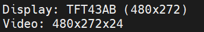
网络驱动
由上面 uboot 启动信息可知，网络驱动有问题，这是因为 100ask 开发板的网络芯片复位引脚和 NXP 官方开发板不一样，因此需要修改驱动。
在 U-Boot 中添加自己的开发板
NXP 官方 uboot 中默认都是 NXP 自己的开发板，虽说我们可以直接在官方的开发板上直接修改，使 uboot 可以完整的运行在我们的板子上。但是为了学习更多东西，接下来学习如何在 uboot 中添加我们的开发板或开发平台。
添加开发板默认配置文件
在 uboot 源码下的 configs 目录下创建默认配置文件。
1 | cd configs |
对 CONFIG_SYS_EXTRA_OPTIONS 和 CONFIG_TARGET_ 修改：
1 | CONFIG_SYS_EXTRA_OPTIONS="IMX_CONFIG=board/freescale/mx6ull_obito_emmc/imximage.cfg,MX6ULL_EVK_EMMC_REWORK" |
添加开发板对应的头文件
在 uboot 源码下的 include/configs 目录下添加自己开发板对应的头文件：
1 | cp include/configs/mx6ullevk.h include/configs/mx6ull_obito_emmc.h |
打开头文件修改宏定义：跟文件名相同，该文件主要是用来配置或裁剪 uboot。
1 | // 修改前 |
添加开发板对应的板级文件夹
uboot 中每个板子都有一个对应的文件夹来存放板级文件，比如开发板上外设驱动文件等等。NXP 的 I.MX 系列芯片的所有板级文件夹都存放在 board/freescale 目录下，在这个目录下有个名为 mx6ullevk 的文件夹，这个文件夹就是 NXP 官方 I.MX6ULL EVK 开发板的板级文件夹。复制 mx6ullevk，将其重命名为自己开发板的名字 mx6ull_obito_emmc，命令如下
1 | cd board/freescale/ |
文件夹下有以下文件：
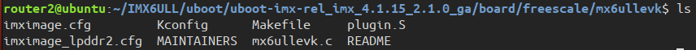
输入命令：
1 | grep -nr "mx6ullevk" |
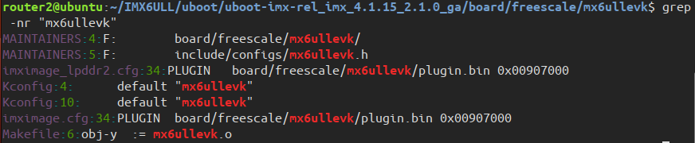
除了 ixmimage_lpddr2.cfg 文件我们将其他文件中的 mx6ullevk 字符串转换成自己给板子起的名字：我的是 mx6ull_obito_emmc，然后打开 Kconfig 文件进行修改：
1 | // 修改前 |
修改 U-Boot 图形界面配置文件
修改文件 arch/arm/cpu/armv7/mx6/Kconfig，在 207 行添加如下内容：
1 | config TARGET_MX6ULL_OBITO_EMMC |
在最后一行的 #endif 的前一行添加如下内容：
1 | source "board/freescale/mx6ull_obito_emmc/Kconfig" |
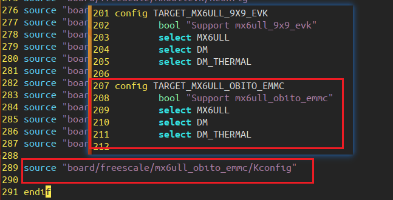
编译新的 U-Boot 测试
uboot 源码根目录下新建默认配置文件： mx6ull_obito_emmc_defconfig
1 |
|
修改权限并执行脚本文件
1 | chmod 777 mx6ull_obito_emmc.sh //给予可执行权限，一次即可 |
新建默认配置文件是为了方便后续修改编译 uboot，编译成功后显示：
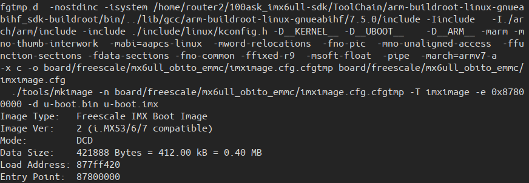
修改 LCD 驱动
修改 LCD 驱动一般注意几点：
- LCD 所使用的 GPIO，查看 uboot 中 LCD 的 IO 配置是否正确。
- LCD 背光引脚 GPIO 的配置。
- LCD 配置参数是否正确。
100ask 开发板 LCD 原理图和 NXP 官方I.MX6ULL 开发板一致，也就是 LCD 的 IO 和背光 IO 都一样的，所以 IO 部分就不用修改了。只需要修改 LCD 配置参数即可。
打开之前新建的板级文件夹 board/freescale/mx6ull_obito_emmc，找到 display_info_t 结构体，修改 LCD 参数。
1 | // 修改前 |
打开开发板对应的头文件：include/configs/mx6ull_obito_emmc.h
将 panel=TFT43AB 全部修改为 panel=TFT7016，panel 的值要与 display_info_t 结构体的 .name 一致。
修改有线网络驱动
我们要修改ENET1 网络驱动的话重点就三点：
①、ENET1 复位引脚初始化。
②、LAN8720A 的器件ID。
③、LAN8720 驱动
IMX6ULL有两个网络外设，分别为ENET1和ENET2，100ask开发板使用LAN8720A作为PHY芯片，接在了ENET2上，LAN8720A芯片有一个地址引脚，RXER/PHYAD0，在开发板上接到了高电平，所以 LAN8720A 的网络PHY地址为1，RESET引脚接在了SNVS_TAMPER6上，由于PHY网络芯片有规定，所有PHY芯片前16个寄存器都是一样的功能，并且使用这16个寄存器就可以让网络正常工作，所以需要修改三个地方：
1 |
setenv ipaddr 192.168.1.7
setenv ethaddr 00:04:9f:04:d2:35
setenv gatewayip 192.168.1.1
setenv netmask 255.255.255.0
setenv serverip 192.168.1.5
saveenv
1 | setenv ipaddr 192.168.1.7 //开发板IP地址 |
注意！只能在uboot 中ping 其他的机器，其他机器不能ping uboot，因为uboot 没有对ping
命令做处理，如果用其他的机器ping uboot 的话会失败！
再次编译烧录 U-Boot
uboot 启动以后会先从 EMMC 中读取环境变量，如果 EMMC 中没有环境变量的话才会使用 mx6ull_obito_emmc.h 的默认环境变量。
在 uboot 命令模式下输入如下命令修改环境变量：
1 | setenv panel TFT7016 |
保存重启 uboot，LCD 驱动就能工作正常了。
U-Boot 一些重要的环境变量
bootcmd 环境变量
bootcmd 保存 U-Boot 启动时执行的的命令序列，一般用来启动内核和加载文件系统，比如读取 EMMC 或者 NAND Flash 中的 Linux 内核镜像文件和设备树文件到 DRAM 中，然后启动 Linux 内核。若 EMMC 或者 NAND 中没有保存 bootcmd 的值，则 uboot 就会从 include/env_default.h 文件中读取 bootcmd 的默认值。
例如 uboot 使用 run 命令来运行 findfdt 变量：
1 | define CONFIG_BOOTCOMMAND \ |
findfdt 是 NXP 自行添加的环境变量，用来查找开发板对应的设备树文件，内容如下：
1 | "findfdt="\ |
- mmc dev ${mmcdev} 用于切换 mmc 设备，mmcdev 为 1，
mmc dev 1切换到 EMMC 上。 - mmc rescan 扫描看有没有 SD 卡或者 EMMC 存在
- mmc 设备存在的话则运行 loadbootscript 环境变量：
1 | loadbootscript=fatload mmc ${mmcdev}:${mmcpart} ${loadaddr} ${script}; |
mmcdev = 1，mmcpart = 1，loadaddr = 0x80800000，script = boot.scr，展开就是：
1 | loadbootscript=fatload mmc 1:1 0x80800000 boot.scr; |
loadbootscript 就是从 mmc1 的分区 1 中读取文件 boot.src 到 DRAM 的 0X80800000 处，加载成功则运行 bootscript 环境变量：
1 | bootscript=echo Running bootscript from mmc ...; |
如果 loadbootscript 没有找到 boot.src 则运行环境变量 loadimage：
1 | loadimage=fatload mmc ${mmcdev}:${mmcpart} ${loadaddr} ${image} |
mmcdev=1，mmcpart=1，loadaddr=0x80800000，image = zImage，展开就是：
1 | loadimage=fatload mmc 1:1 0x80800000 zImage |
loadimage 就是从 mmc1 的分区中读取 zImage 到内存的 0X80800000 处，加载 linux 镜像文件 zImage 成功就运行环境变量 mmcboot：mmcargs 是用来设置 bootargs 环境变量的。
1 | "mmcboot=echo Booting from mmc ...; " \ |
环境变量 loadfdt：
1 | loadfdt=fatload mmc ${mmcdev}:${mmcpart} ${fdt_addr} ${fdt_file} |
展开就是：从mmc1 的分区 1 中读取 imx6ull-14x14-evk.dtb 文件并放到内存的 0x83000000 处d
1 | loadfdt=fatload mmc 1:1 0x83000000 imx6ull-14x14-evk.dtb |
读取设备树文件成功则调用命令 bootz 启动 linux：
1 | bootz ${loadaddr} - ${fdt_addr} |
展开就是：
1 | bootz 0x80800000 - 0x83000000 (注意‘-’前后要有空格) |
**至此 Linux 内核启动完毕，分析可知步骤如下：**4 行精华
1 | mmc dev 1 // 切换到EMMC |
NXP 官方将 CONFIG_BOOTCOMMAND 写复杂是为了兼容多个板子，当我们明确找到自己所使用的板子就可以简化为：
1 | define CONFIG_BOOTCOMMAND \ |
或者可以直接在 uboot 启动时设置 bootcmd 的值，这个值是直接保存到 EMMC 中的：
1 | setenv bootcmd 'mmc dev 1; fatload mmc 1:1 80800000 zImage; fatload mmc 1:1 83000000 imx6ull-14x14-evk.dtb; bootz 80800000 - 83000000;' |
bootargs 环境变量
bootargs 保存 uboot 传递给 linux 内核的参数，这些参数可以控制内核的启动行为，例如内存设置、控制台配置、文件系统类型等。
bootargs 环境变量是由 mmcargs 设置的：
1 | mmcargs=setenv bootargs console=${console},${baudrate} root=${mmcroot} |
console=ttymxc0，baudrate=115200，mmcroot=/dev/mmcblk1p2 rootwait rw，展开就是：
1 | mmcargs=setenv bootargs console=ttymxc0, 115200 root=/dev/mmcblk1p2 rootwait rw |
- console=ttymxc0, 115200：设置 ttymxc0（串口 1）作为 linux 终端，波特率为 115200。
- root=/dev/mmcblk1p2 rootwait rw：表示根文件系统存放在 mmcblk1 设备的分区 2 中，rootwait rw 表示等待 mmc 设备初始化完成以后再挂载，rw 表示根文件系统可以读写。
bootargs 就是设置了很多的参数的值，给 linux 内核用，常用参数有：
- console：linux 终端，也叫控制台，一般 uboot 默认都有设置串口作为 linux 终端，这样就可以通过串口在 PC 机使用终端软件进行交互了。设置 console 为 ttymxc0，这是因为 linux 启动后 开发板串口 1 在 linux 下的设备文件就是 /dev/ttymxc0。
- root 用来设置根文件系统的位置。
- rootfstype 用于指定根文件系统类型，若根文件子系统为 ext 格式，则不用设置。
U-Boot 启动 Linux 测试
网络启动
网络启动系统主要是为了方便测试，不用频繁地烧写 EMMC，加快开发速度。一般使用 tftp 服务加载 zImage 和 dtb 文件，设置 bootcmd 和 bootargs 环境变量：
1 | setenv bootargs 'console=ttymxc0,115200 root=/dev/mmcblk1p2 rootwait rw' |
EMMC 启动
EMMC 启动的话，需要向 EMMC 分区提前存放已知好的 zImage 和 dtb 文件，然后设置 bootcmd 和 bootargs 环境变量：
1 | setenv bootargs 'console=ttymxc0,115200 root=/dev/mmcblk1p2 rootwait rw' |
Linux 内核移植
一开始用的 4.1.15 版本，后面发现 100ask 交叉编译器支持不了该版本，导致根文件系统挂载时，内核崩溃，后改用 4.9.88 版本，这些 Linux 源码都是 NXP 改版适配后的源码。
该版本下没有带 mfg 的 imx_v7_mfg_defconfig 文件，只有 imx_v7_defconfig 文件。
编译 NXP 官方开发板的 Linux 内核
编译测试
1 | make ARCH=arm CROSS_COMPILE=arm-buildroot-linux-gnueabihf- imx_v7_defconfig // 配置linux内核 |
编译完成后会在 arch/arm/boot 目录下生成 zImage 镜像文件，如果使用设备树的话还会在 arh/arm/boot/dts 目录下生成开发板对应的设备树文件。
- Linux 内核镜像文件：zImage
- 设备树文件：imx6ull-14x14-evk.dtb
将两个文件复制到 Ubuntu 的 tftp 目录下：
1 | cp arch/arm/boot/zImage ~/tftpboot/ |
uboot 命令行模式下使用 tftp 加载 zImage 和 imx6ull-14x14-evk.dtb
1 | tftp 80800000 zImage |
因为还没有根文件系统，所以会显示以下信息并卡住——Linux 内核崩溃，重启进入 uboot 即可。
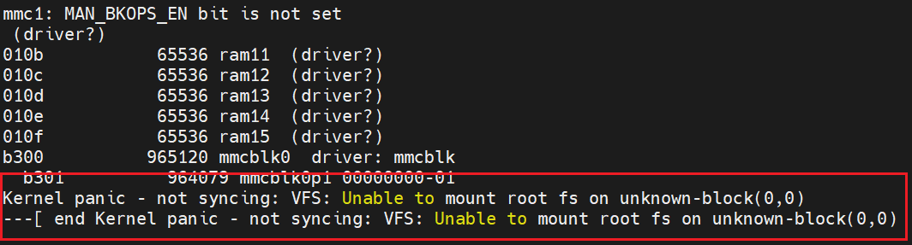
也就是提示内核崩溃，因为 VFS(虚拟文件系统)不能挂载根文件系统，因为根文件系统目录不存在。即使根文件系统目录存在，如果根文件系统目录里面是空的依旧会提示内核崩溃。这个就是根文件系统缺失导致的内核崩溃，但是内核是启动了的，只是根文件系统不存在而已。
添加自己的开发板
添加开发板默认配置文件
复制 imx_v7_defconfig 文件重新命名。
1 | cd arch/arm/configs |
添加开发板对应的设备树文件
复制 imx6ull-14x14-evk.dts 文件重新命名。
1 | cd arch/arm/boot/dts |
.dts 是设备树源码，编译后变为 .dtb 文件，因此需要在 arch/arm/boot/dts/Makefile 找到 dtb- $(CONFIG_SOC_IMX6ULL) 配置项，在此配置项中加入 imx6ull-obito-emmc.dtb
编译测试
放了方便调试，新建一个编译脚本文件 imx6ull_obito_emmc.sh ：
1 |
|
添加权限后执行脚本文件编译：
1 | chmod 777 imx6ull_obito_emmc.sh |
将编译生成 zImage 和设备树复制到 tftp 目录：
1 | cp arch/arm/boot/zImage ~/tftpboot/ |
使用 tftp 加载 zImage 和 设备树
1 | tftp 80800000 zImage |
启动成功说明已经成功在 NXP 提供的 Linux 内核源码添加了自己的开发板。同样因为还没有根文件系统，重启进入 uboot 即可。
修改驱动
CPU 主频
CPU 主频这里不作修改，可以使用 make menuconfig 进入 Linux 内核图形化界面：
1 | CPU Power Management |
CPU 支持 198MHz、396MHz、528MHz 和 792MHz 四个模式：
- Performance：最高性能，直接用最高频率，不考虑耗电。
- Interactive：一开始直接用最高频率，然后根据 CPU 负载慢慢降低。
- Powersave：省电模式，通常以最低频率运行，系统性能会受影响，一般不会用这个！
- Userspace：可以在用户空间手动调节频率。
- Ondemand：定时检查负载，然后根据负载来调节频率。负载低的时候降低 CPU 频率，这样省电，负载高的时候提高 CPU 频率，增加性能。
修改 EMMC 驱动
由开发板核心板原理图可知用到的 EMMC 采用 8 根数据线，而 Linux 内核驱动里面 EMMC 默认是 4 线模式，这样 EMMC 读写速度会慢很多，而我们只需要修改设备树 imx6ull-obito-emmc.dts 即可。
1 | // 修改前 |
- bus-width = <8>：表示 8 根线
- no-1-8-v：关闭EMMC 1.8 V 供电选项，防止内核运行时用 1.8 V 去驱动 EMMC
修改网络驱动
为什么 uboot 有网络驱动了，还要修改内核的网络驱动呢？
uboot 的网络驱动主要用于实现网络启动(BOOTP 或 DHCP 协议)或通过 TFTP 等协议进行文件的传输，驱动相对简单，目的在于方便调试之类的。
内核的网络驱动复杂，支持各种网络协议（TCP/IP、Ethernet、Wi-Fi 等），需要处理完整的网络堆栈和多种网络硬件。
添加复位引脚
由于 PHY 芯片不同，由前面移植 uboot 时可知修改网络驱动主要是在设备树添加 PHY 芯片的复位引脚，
添在 iomuxc_sncs 节点下添加网络复位引脚信息：
1 | // 添加网络复位引脚 |
正点原子教程中还修改了网络时钟引脚配置信息，将 MX6UL_PAD_ENET2_TX_CLK__ENET2_REF_CLK2 和 MX6UL_PAD_ENET1_TX_CLK__ENET1_REF_CLK1 的值从默认值 0x4001b031 修改为 0x4001b009，但是我看 100ask 提供的设备树是没有修改默认值的，而是将 pinctrl_enet1节点的内容放到 pinctrl_enet2 中。
修改 fec1 和 fec2 节点
修改 fec1 节点：
1 | // 修改前 |
- phy-reset-duration = <26>：复位低电平信号持续时间为 26 ms
- smsc,disable-energy-detect：表示 PHY 芯片是 SMSC 公司的，Linux 内核通过此信息找到对应 PHY 芯片驱动来驱动 LAN8720A
- ethernet-phy@：后面数字表示 PHY 的地址
- reg：PHY 的地址
配置 Linux 内核，使能 LAN8720 驱动
Linux 内核已经有多个 PHY 芯片的驱动了，但默认是不编译的，我们用到的是 LAN8720A（SMSC 公司的），因此我们输入 make menuconfig 进入 Linux 图形界面配置使能 LAN8720 驱动，按以下路径进入找到并选择使能 SMSC PHY 芯片驱动。
1 | -> Device Drivers |
根文件系统构建
根文件系统概述
根文件系统是 Linux 内核启动以后挂载(mount)的第一个文件系统，然后从根文件系统中读取初始化脚本，比如 rcS，inittab 等。
Linux操作系统的根目录（通常表示为"/"）是文件系统的最顶层目录，它包含了所有其他目录和文件。以下是一些常见的根目录下子目录及其一般用途的解释：
| 目录 | 描述 |
|---|---|
| /bin | 存放系统命令的二进制文件，比如ls、cp等 |
| /boot | 包含启动 Linux 系统所需的文件，如内核和引导加载程序。 |
| /dev | 包含设备文件，这些文件代表计算机上的硬件设备。 |
| /etc | 存放系统配置文件，比如网络配置、服务配置等。 |
| /home | 用户的个人目录，每个用户都有一个以用户名命名的子目录。 |
| /lib | 存放系统库文件，这些是程序运行时需要的共享代码。 |
| /media | 用于自动挂载可移动设备，如 USB 驱动器。 |
| /mnt | 用于临时挂载文件系统。 |
| /opt | 用于存放第三方软件包。 |
| /proc | 虚拟文件系统，包含系统和进程信息，/proc 是一种伪文件系统（也即虚拟文件系统），存储的是当前内核运行状态的一系列特殊文件。 |
| /root | 系统管理员（root 用户）的家目录。 |
| /sbin | 存放系统管理命令的二进制文件，通常只有 root 用户才能访问。 |
| /srv | 存放系统服务的数据。 |
| /tmp | 存放临时文件。 |
| /usr | Unix Shared Resources(共享资源) 的缩写，用户相关的应用程序和文件，通常分为 /bin, /lib, /sbin 等子目录。 |
| /var | 存放经常变化的文件，如日志文件。 |
| /sys | 包含系统设备和驱动程序的接口信息，类似于 /proc。 |
构建根文件系统有许多工具：BusyBox、Buildroot、
BusyBox 构建根文件系统
BusyBox 是一个集成了大量 Linux 命令和工具的软件，使用时只需要下载其源码，然后配置选择自己需要的功能，编译即可。
一般在开发前期都是通过 nfs 挂载根文件系统的，等最后完善测试稳定才烧录到 EMMC 或 NAND 中的，因此我们在自己 Ubuntu 的 nfs 服务器目录下添加一个子目录(例如 busybox1.29.0_rootfs )来存放自己根文件系统。
初步编译 BusyBox
修改顶层 Makefile
在 BusyBox 顶层目录修改 Makefile 文件，添加 ARCH 和 CROSS_COMPILE，搜索 164 行和 190 行修改成自己的编译器存放目录：
1 | CROSS_COMPILE ?= /home/router2/100ask_imx6ull-sdk/ToolChain/arm-buildroot-linux-gnueabihf_sdk-buildroot/bin/arm-buildroot-linux-gnueabihf- |
BusyBox 中文字符支持
新版本的 busybox 默认不支持中文字符显示，中文字符都会显示为 ‘?’，所以我们需要修改 busybox 源码，打开文件 libbb/printable_string.c ，找到函数 printable_string，
将字符大于 0x7f 的语句进行修改。
1 | const char* FAST_FUNC printable_string(uni_stat_t *stats, const char *str) |
接着打开文件 libbb/unicode.c，搜索函数 FAST_FUNC unicode_conv_to_printable2，将字符大于 0x7f 显示 ‘?‘ 删除。
1 | if (unicode_status != UNICODE_ON) { |
配置 busybox
busybox 有三种配置选项：
- defconfig：缺省配置，也就是默认配置选项。
- allyesconfig，全选配置，也就是选中 busybox 的所有功能。
- allnoconfig，最小配置。
这里使用默认配置即可：
1 | make defconfig |
取消勾选 Build static binary (no shared libs) 选择静态编译还是动态编译，静态编译不需要库文件，但是文件很大，动态编译则要求根文件系统中有动态库，文件小很多，这里使用动态编译的方式。
正点原子教程：这里我们不能采用静态编译！因为采用静态编译的话 DNS 会出问题！无法进行域名解析
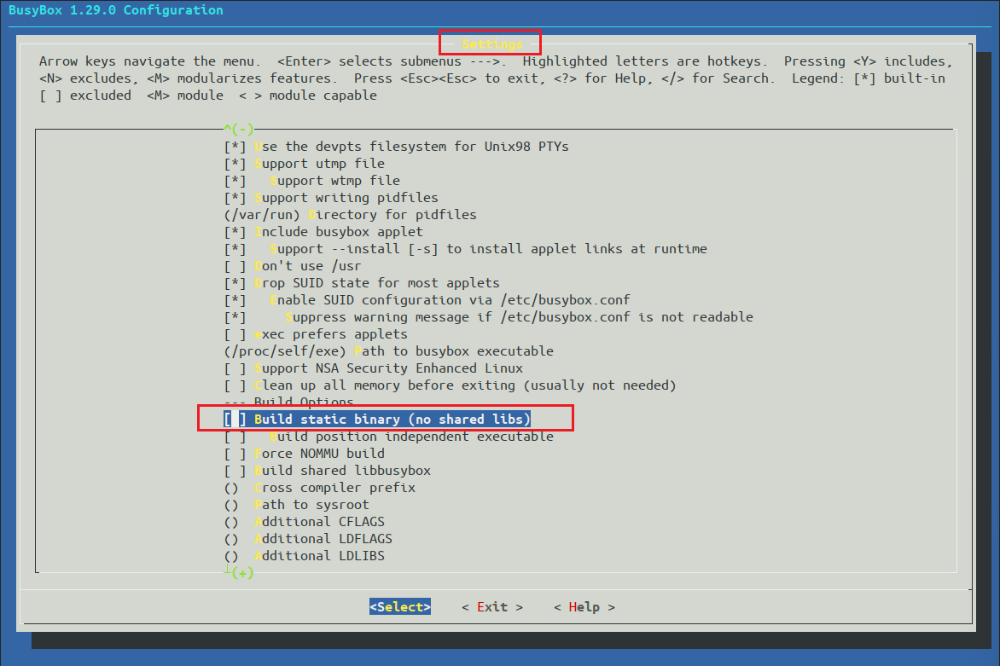
选择 vi-style line editing commands
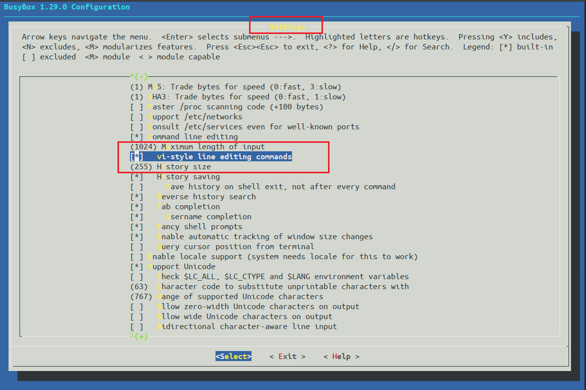
取消勾选 Simplified modutils
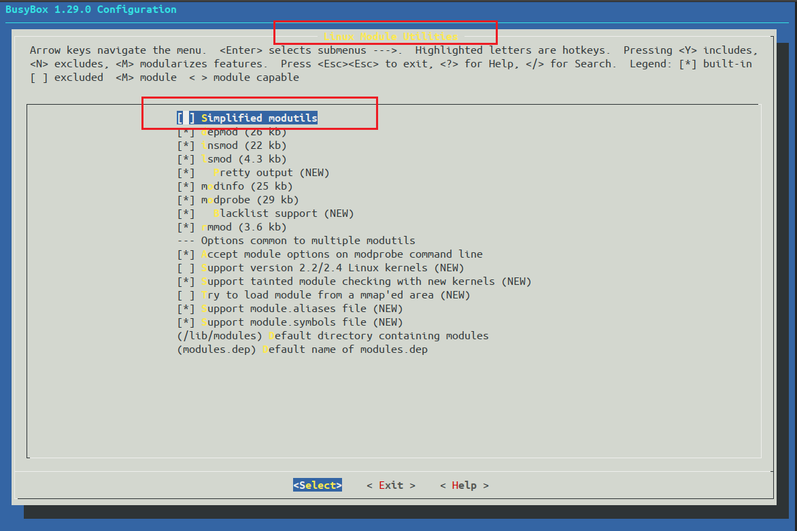
确保 mdev 配置项全部选中，默认都是选中的
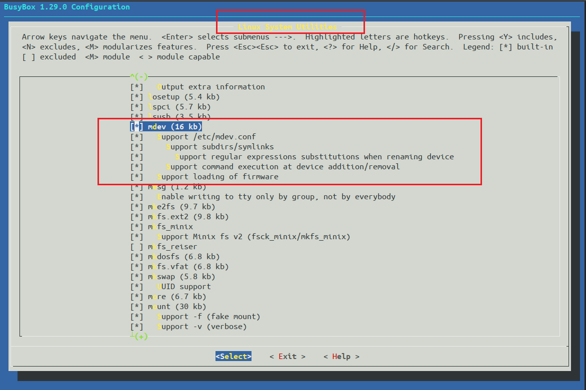
使能 unicode 编码以支持中文，确保两个选中
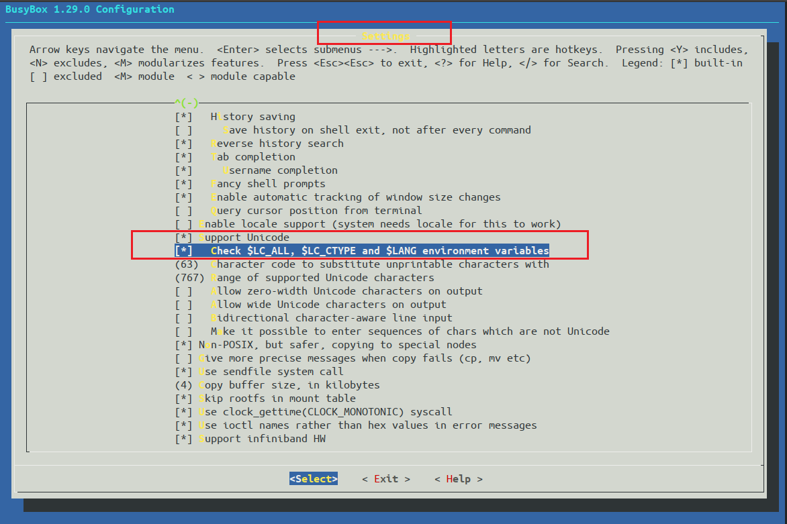
编译 busybox
编译 busybox，CONFIG_PREFIX 指定编译结果存放目录。
1 | make -j8 |
编译完成目录下内容如下：
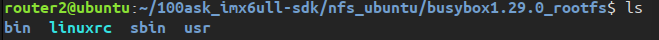
有 bin、sbin 和 usr 三个目录以及 linuxrc 文件。Linux 内核 init 进程最后会查找用户空间的 init 程序，找到以后就会运行这个用户空间的 init 程序，从而切换到用户态。如果 uboot 中 bootargs 环境变量设置 init=/linuxrc，那么 linuxrc 就是可以作为用户空间的 init 程序，所以用户态空间的 init 程序是 busybox 来生成的。
构建整个根文件系统
因为前面是使用动态编译，所以此时的根文件系统还不能使用，需要添加一些动态库文件等来完善。
添加 lib/ 目录并添加库文件
添加 lib 目录，将交叉编译器目录下的 lib 库文件复制到该目录下。
1 | // 创建 lib 文件夹 |
cp -d 表示拷贝符号连接，相当于 Windows 系统的快捷方式。ld-linux-armhf.so.3 库文件也是符号链接，会连接到其他库文件上，但是 ld-linux-armhf.so.3 不能作为符号链接，否则根文件系统中执行程序无法执行。
我们可以通过先删除该文件，然后重新复制该文件到目录下（不使用 -d 参数），转换前后如下图：一开始作为符号链接时文件很小，去除掉就很大了，是一个实实在在的库文件。

添加 usr/lib 目录并添加库文件
1 | // 进入目录 |
使用 du 命令查看目录大小：
1 | du lib/ usr/lib/ -sh、 |
发现 usr/lib 目录很大，进入目录查看有哪些库文件发现有很多第三方库(qt 库、视频解码库等)，可以选择性删掉一些以减少文件大小，删除这些库方便后续自己交叉编译库学习，这里手动删除了一些库减少到了 70M。
创建其他文件夹
1 | mkdir dev proc mmt sys tmp root |
测试根文件系统
uboot 命令行模式下设置 bootargs 环境变量，设置 root 值。
1 | root=/dev/nfs nfsroot=[<server-ip>:]<root-dir>[,<nfs-options>] ip=<client-ip>:<server-ip>:<gw-ip>:<netmask>:<hostname>:<device>:<autoconf>:<dns0-ip>:<dns1-ip> |
- /dev/nfs：表示 nfs 挂载
- server-ip：服务器 IP 地址
- root-dir：根文件在服务器的存放目录
- nfs-options：nfs 的其他可选项
- client-ip：客户端 IP 地址，即开发板的 IP 地址
- gw-ip：网关地址
- netmask：子网掩码
- hostname：主机名，空着即可
- device：设备名，网卡名：eth0、eth1 等
- autoconf：自动配置，设置 off 即可
- dns0-ip：DNS0 服务器 IP 地址，不使用
- dns1-ip：DNS1服务器 IP 地址，不使用
1 | setenv bootcmd 'tftp 80800000 zImage; tftp 83000000 imx6ull-obito-emmc.dtb; bootz 80800000 - 83000000' |
proto=tcp”表示使用 TCP 协议，“rw”表示 nfs 挂载的根文件系统为可读可写.
1 | tftp 80800000 zImage |
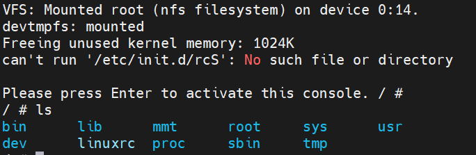
挂载成功，但提示 can't run '/etc/init.d/rcS': No such file or directory，这是一个脚本文件，用来规定启动哪些文件的脚本文件，接下来就是完善根文件系统了。
完善根文件系统
在内核挂载根文件系统后，运行的第一个程序是根目录下的 linuxrc，实际是一个指向 /bin/busybox 的链接, 也就是说系统起来后运行的第一个程序是 busybox 本身。先执行 /etc/inittab， 然后调用 /etc/init.d/rcS， 最后是执行 /etc/profile。
根文件系统还缺少一些脚本文件，接下来添加几个脚本文件进行完善。
/etc/inittab,/etc/init.d/rcS和/etc/profile分析_linux profile 和inttab谁先调用-CSDN博客
创建 /etc/init.d/rcS 文件
rcS 是一个 shell 脚本文件，rcS 是用来规定 Linux 内核启动哪些文件的脚本文件。
1 | mkdir /etc/init.d/rcS |
rcS 文件添加以下内容：
1 | !/bin/sh |
- #!/bin/sh：表示这是一个 shell 脚本
- PATH：PATH 环境变量保存可执行文件可能存在的目录，冒号: 可以添加多个目录
- LD_LIBRARY_PATH：LD_LIBRARY_PATH 环境变量保存库文件所在的目录
- export：导出指定的环境变量，相当于声明一些全局变量
- mount 命令挂载所有的文件系统，这些文件系统由文件
/etc/fstab来指定 - 创建
/dev/pts目录，将 devpts 挂载到/dev/pts目录下 - 最后两行使用 mdev 来管理热插拔设备，让 linux 内核可以在 /dev 目录下自动创建设备节点
最后给 rcS 文件加权限：
1 | chmod 777 rcS |
创建 /etc/fstab 文件
fstab 在 Linux 开机以后自动配置哪些需要自动挂载的分区，格式如下：
1 | <file system> <mount point> <type> <options> <dump> <pass> |
- file system：要挂载的特殊设备
- mount point：挂载点
- type：文件系统的类型，例如 ext2、ext3、proc、romfs、tmpfs 等
- options：挂载选项，一般使用 defaults，包含了 了 rw、suid、 dev、 exec、 auto、 nouser 和 async
- dump：1 表示允许备份，0 表示不备份，一般不备份
- pass：磁盘检查设置，0 表示不检查，根目录 ‘/’ 设置为 1，其他分区不能为 1，从 2 开始，一般不在 fstab 中挂载根目录
在 fstab 文件添加以下内容：
1 | <file system> <mount point> <type> <options> <dump> <pass> |
创建 /etc/inittab 文件
init 程序会读取/etc/inittab 这个文件，inittab 由若干条指令组成。每条指令的结构都是一样的，由以“:”分隔的 4 个段组成，格式如下：
1 | <id>:<runlevels>:<action>:<process> |
- id：每个指令的标识符，不能重复
- runlevels：对 busybox 没用
- action：动作，用于 process 可能用到的动作
- process：具体的动作，比如程序、脚本或命令等
busybox 支持的动作如下：
| 动作 | 描述 |
|---|---|
| sysinit | 在系统初始化的时候 process 才会执行一次。 |
| respawn | 当 process 终止以后马上启动一个新的。 |
| askfirst | 和 respawn 类似，在运行 process 之前在控制台上显示“Please press Enter to activate this console.”。只要用户按下“Enter”键以后才会执行 process。 |
| wait | 告诉 init，要等待相应的进程执行完以后才能继续执行。 |
| once | 仅执行一次，而且不会等待 process 执行完成。 |
| restart | 当 init 重启的时候才会执行 procee。 |
| ctrlaltdel | 当按下 ctrl+alt+del 组合键才会执行 process。 |
| shutdown | 关机的时候执行process。 |
在 inittab 文件添加以下内容：
1 | etc/inittab |
- 系统启动以后运行
/etc/init.d/rcS脚本文件 - 将 console 作为控制台终端，也就是 ttymxc0，串口
- 重启时运行
/sbin/init脚本文件 - 按下组合键就运行
/sbin/reboot - 关机时执行
/bin/umount -a -r命令，卸载各个文件系统 - 关机时执行
/sbin/swapoff -a命令，关闭交换分区
测试根文件系统
测试制作好的根文件系统，测试自己编写的程序是否能运行，是否支持程序开机自启动，中文支持是否正常，能不能链接等功能。
编译测试 hello.c
1 |
|
执行文件能够正常循环打印，则证明测试成功。
中文显示测试
新建中文名字的目录并在文件中写入中文，看显示是否正常。
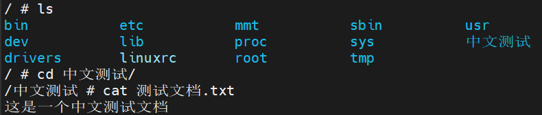
可以看到根文件系统可以正常支持中文显示。
开机自启动测试
这里以开机自动执行 hello 程序为例子在 /etc/init.d/rcS 文件添加内容：
1 | 添加开启自动程序 |
重启开发板，看是否自动运行。
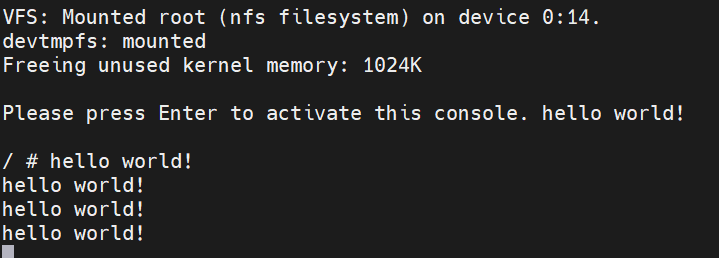
输入 ps 查看 hello 程序的进程 pid 号，输入命令关闭程序：
1 | kill -9 pid |
网络连接测试
测试开发板能不能上网，对百度官网进行 ping 命令：
1 | ping baidu.com |
会发现提示 ping: bad address 'baidu.com'，这是域名解析错误的原因，因为我们还没有配置域名解析服务器，也就是 DNS 的 IP 地址。在根文件目录下新建 /etc/resolv.conf 文件，添加 DNS 服务器，一般填写自己的网关即可。
1 | namserver 192.168.1.1 |
重新 ping 百度网站测试是否成功。
烧写系统
前面测试系统时都是通过网络连接进行测试，等系统测试稳定后，就将系统烧录到 EMMC 或 NAND 中，就不用每次都进行网络连接了。
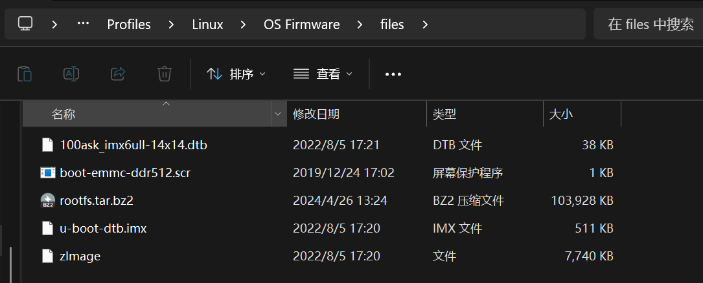
1 | # /etc/inittab |
1 | export PATH=/bin:/sbin:/usr/bin:/usr/sbin |
1 | #!/bin/sh |